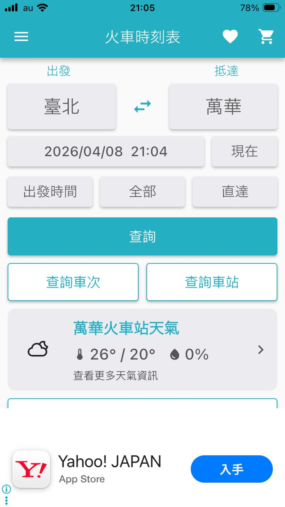
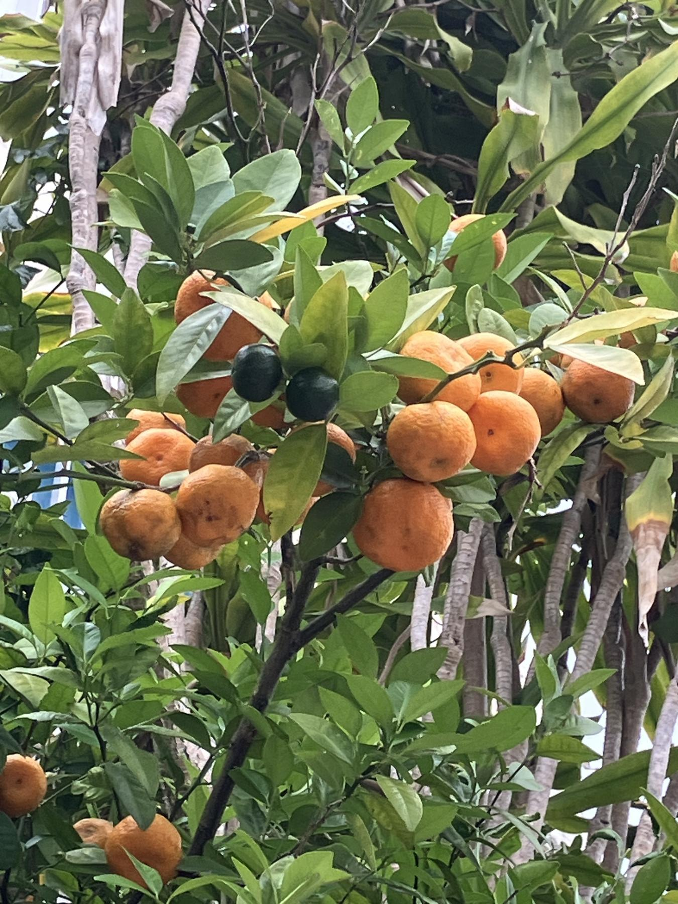

うるがいの話 ある日
最新: 電車案内アプリ【うるがいの話 ある日】とは 一日だけのプログです
『うるがいの話』の最新一日だけのプログで、通信料が少なく経済的だ。カニの画像をクリックすると全ての日付が載る『うるがいの話』サイトを表示します
|
|
【うるがいの話】 うるがい(ｳﾙｶﾞｲ urugai)とは、『もずくがに』の名前でとても大きくなります。 |
|---|---|
|
|
【カミマヤーの話】 猫のことを方言でマヤーといいます。カミマヤー（kamimayaa）とは、神の猫のことです。 |
|
【たながぁの音楽】 たながぁ（ﾀﾅｶﾞｰ tanagaa）とは手長えびのことで、何種類かあり大きいのは車 エビぐらいになります。 |

|
【ぶながぁの話】 ぶながぁ(ﾌﾞﾅｶﾞｰ bunagaa)とは、赤い髪の毛、赤い身体、そして身長は１ｍ２０ｃｍ ぐらい、川の蟹を食べているの目撃された。場所は沖縄県国頭郡大宜味村のと ある村僕の隣近所に住んでいる爺さんから、聞いた話です。 |
|
|
【ギーマの話】 ギーマ(giima)とは、山原の里山に咲くスズランに似た、 花を付けます。実は食べられます、 気が付くと口の周りが紫になっています。 |
2026年04月16日 (木）電車案内アプリ
16:09

ん？、台北がない。子供が薦めたアプリをインストールしたの
だが、・・・。すると、子供が、出発に臺北を設定する。ん？
なにこれ、繁体字なのです。えー、観光ガイドブックみても臺
北なんて、書かれていない。今日、本屋にいって繁体字で書い
てあるガイドブックがないか、あるだけの６冊ほど見たが全て
台北。フーン、日本語訳しなくてもいいのに・・・・。

本屋を出ようとすると、７０歳を超える（本人が言っていた）
おばさんが、手にした本の園比屋武御嶽石門（そのひゃんうた
きいしもん）の写真を、指してここって行っていい場所でしょ
うか？。ア、いいですよ、沖縄でダメって所はあまり無いと思
います。
私、ドルの時代に１６歳で本土に行って、昨年沖縄に帰ってき
たのです。帰ってきたら知り合いもいなくて、心が淋しい。で
沖縄の歴史などを今から、勉強したくて、でも誰にも話せなく
て・・・、ありがとうございます。なんか、訳ありの人のよう
だった。

識名宮の隣の民家のシークワーサー、去年の完熟した実と今年
の花から実をつけた青いミカンが、共存していた。初めてみる
光景である。